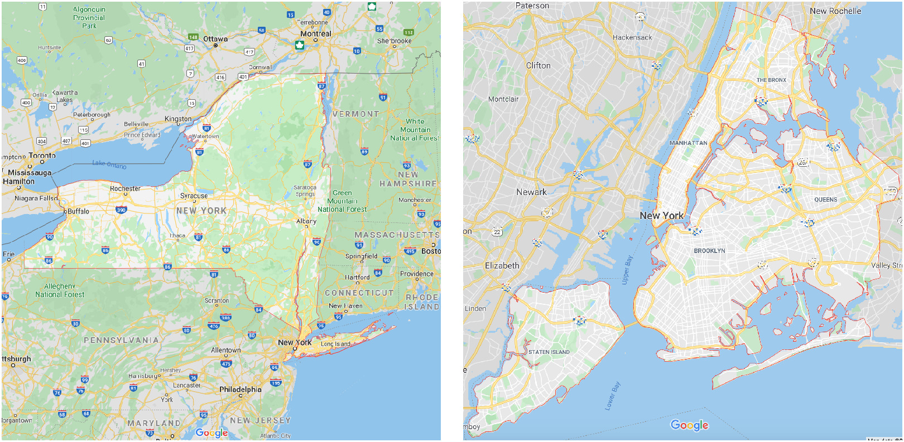

Our goal is to understand the data well enough be able to answer some basic questions about it (see below), and to understand whether the dataset follows our intuitions or not. (If not, it probably needs some cleaning!)

Before we can get to these questions, we must first get the data into good shape.
Not very interesting, but necessery - feel free to skip over this section.
Some admin relating to this notebook before we get started…
# Set the working directory for this work:
#setwd("~/NYC_Taxis")
# ============================
# To prevent libraries displaying messy messages when loading, I'm going to re-define the function as an alias:
library <- function(...){
suppressPackageStartupMessages(base::library(...))
}
# ============================
# Load the libraries that we need:
library(knitr)
library(tidyverse)
library(kableExtra)
library(dplyr)
library(data.table)
library(R.utils)
# Create function for viewing tables simply in the notebook:
show_table <- function(my_table){
kable(my_table) %>%
column_spec(1, width = "10em") %>%
kable_styling(bootstrap_options = c("striped", "hover"))
}
# ============================
# Update Dictionary
update_dictionary <- function(my_vars){
data_dictionary$Clean[which(data_dictionary$Variable_Name %in% my_vars)] <- 1
return (data_dictionary)
}
# ============================
# Show Mini-Dictionary
show_mini_dictionary <- function(data_dictionary){
show_table(cbind(data_dictionary[1:7,1:2],data_dictionary[8:14,1:2],data_dictionary[15:21,1:2]))
}
# ============================
# Show Dictionary Definition:
show_dict_defn <- function(my_varname){
ii <- which(data_dictionary$Variable_Name == my_varname)
cat(data_dictionary[ii,2], ":\n", data_dictionary[ii,3])
}
# ============================
# Show double histogram:
double_hist <- function(my_x, my_name = "varname", my_breaks = 20){
x_norm_lin <- round(my_breaks*(my_x - min(my_x))/(max(my_x) - min(my_x)))
nyc_taxi_data %>% ggplot(aes(x = trip_time_in_secs)) + geom_histogram() + scale_x_log10()
}
# ============================
# Nice Summary:
nice_summary <- function(df_var){
aa <- summary(df_var)
data.frame('quantity'=names(aa), 'values'=as.character(aa))
}Loading the actual data:
# The first time this runs, it will download the data into the data/ folder.
# Subsequent times it will just read from the downloaded file.
#If the data file isn't there, download it:
if(!file.exists("data/nyc_taxi_data.csv.gz")){
system("wget -P data/ https://www.dropbox.com/s/v3fy3slv41lg73q/nyc_taxi_data.csv.gz")
}
# If the dataset is already in memory, don't reload it (it takes a while...)
if(quick_mode){
nyc_taxi_data <- as_tibble(fread("data/nyc_taxi_data_small.csv.gz", verbose=F, showProgress=T))
} else{
nyc_taxi_data <- as_tibble(fread("data/nyc_taxi_data.csv.gz", verbose=F, showProgress=T))
}Fix some of the data types:
# Fix some of the data types:
nyc_taxi_data$vendor_id <- as.factor(nyc_taxi_data$vendor_id)
nyc_taxi_data$rate_code <- as.factor(nyc_taxi_data$rate_code)
nyc_taxi_data$payment_type <- as.factor(nyc_taxi_data$payment_type)
nyc_taxi_data$store_and_fwd_flag <- as.factor(nyc_taxi_data$store_and_fwd_flag)
names(nyc_taxi_data)[19] <- "tips"
names(nyc_taxi_data)[20] <- "tolls"Our data is now stored in the variable nyc_taxi_data.
What are the dimensions of this dataset?
dim(nyc_taxi_data)## [1] 15099164 22Over 15-million rows of data, and 22 columns of information.
show_table(head(nyc_taxi_data)) %>% scroll_box(width = "100%")| medallion | hack_license | vendor_id | rate_code | store_and_fwd_flag | pickup_datetime | dropoff_datetime | passenger_count | trip_time_in_secs | trip_distance | pickup_longitude | pickup_latitude | dropoff_longitude | dropoff_latitude | payment_type | fare_amount | surcharge | mta_tax | tips | tolls | total_amount | randID |
|---|---|---|---|---|---|---|---|---|---|---|---|---|---|---|---|---|---|---|---|---|---|
| 91F6EB84975BBC867E32CB113C7C2CD5 | AD8751110E6292079EB10EB9481FE1A6 | CMT | 1 | N | 2013-04-04 18:47:45 | 2013-04-04 19:00:25 | 1 | 759 | 2.5 | -73.95785 | 40.76532 | -73.97627 | 40.78565 | CRD | 11.0 | 1.0 | 0.5 | 2.50 | 0 | 15.00 | 53 |
| EC34CD1B3797DFAFF3FE099BA87B6656 | 8FE6A4AEDF89B6B4E19D2377FD3FB7D7 | CMT | 1 | N | 2013-04-05 07:08:34 | 2013-04-05 07:17:34 | 1 | 540 | 1.6 | 0.00000 | 0.00000 | 0.00000 | 0.00000 | CRD | 8.5 | 0.0 | 0.5 | 1.80 | 0 | 10.80 | 64 |
| C1B9DA774DC2BBC6DE27CE994E7F44A0 | E1B595FD55E4C82C1E213EB17438107A | CMT | 1 | N | 2013-04-04 17:59:50 | 2013-04-04 18:21:48 | 1 | 1318 | 3.6 | -73.98288 | 40.75499 | -74.00919 | 40.71537 | CRD | 16.5 | 1.0 | 0.5 | 3.60 | 0 | 21.60 | 68 |
| 9BA84250355AB3FC031C9252D395BF8A | 16BB0D96A0DCC853AEC7F55C8D6C71E0 | CMT | 1 | N | 2013-04-04 18:12:01 | 2013-04-04 18:25:24 | 1 | 799 | 1.9 | -73.97812 | 40.76345 | -73.95567 | 40.77664 | CRD | 10.0 | 1.0 | 0.5 | 3.45 | 0 | 14.95 | 73 |
| 205A696DF62AD03C88DA8C5EC5248639 | 579C41EA5EC846F8B641A42F9EE3E855 | CMT | 1 | N | 2013-04-04 20:12:57 | 2013-04-04 20:29:55 | 1 | 1017 | 3.6 | -74.00637 | 40.74475 | -73.96166 | 40.76108 | CRD | 15.0 | 0.5 | 0.5 | 3.20 | 0 | 19.20 | 39 |
| EE75E5927D00739AC342810C336A825E | 1B4E92431F9DA4D49874EC76E769E874 | CMT | 1 | N | 2013-04-05 02:48:11 | 2013-04-05 02:51:21 | 2 | 189 | 0.7 | -73.98519 | 40.75493 | -73.99078 | 40.74800 | CRD | 4.5 | 0.5 | 0.5 | 1.10 | 0 | 6.60 | 76 |
We can get deeper insights into each variable in the dataset with a summary:
summary(nyc_taxi_data)## medallion hack_license vendor_id rate_code store_and_fwd_flag pickup_datetime dropoff_datetime passenger_count trip_time_in_secs trip_distance
## Length:15099164 Length:15099164 CMT:7582275 1 :14768079 :7517603 Length:15099164 Length:15099164 Min. :0.000 Min. : 0.0 Min. : 0.000
## Class :character Class :character VTS:7516889 2 : 254243 N:7451591 Class :character Class :character 1st Qu.:1.000 1st Qu.: 360.0 1st Qu.: 1.040
## Mode :character Mode :character 5 : 39096 Y: 129970 Mode :character Mode :character Median :1.000 Median : 600.0 Median : 1.780
## 3 : 21863 Mean :1.709 Mean : 746.6 Mean : 2.863
## 4 : 14552 3rd Qu.:2.000 3rd Qu.: 960.0 3rd Qu.: 3.200
## 0 : 1145 Max. :9.000 Max. :10800.0 Max. :100.000
## (Other): 186
## pickup_longitude pickup_latitude dropoff_longitude dropoff_latitude payment_type fare_amount surcharge mta_tax tips tolls
## Min. :-2323.42 Min. :-3481.14 Min. :-2771.29 Min. :-3547.90 CRD:8105102 Min. : 2.50 Min. : 0.0000 Min. :0.0000 Min. : 0.000 Min. : 0.0000
## 1st Qu.: -73.99 1st Qu.: 40.73 1st Qu.: -73.99 1st Qu.: 40.73 CSH:6942763 1st Qu.: 6.50 1st Qu.: 0.0000 1st Qu.:0.5000 1st Qu.: 0.000 1st Qu.: 0.0000
## Median : -73.98 Median : 40.75 Median : -73.98 Median : 40.75 DIS: 11542 Median : 9.50 Median : 0.0000 Median :0.5000 Median : 1.000 Median : 0.0000
## Mean : -72.74 Mean : 40.07 Mean : -72.70 Mean : 40.05 NOC: 33575 Mean : 12.27 Mean : 0.3267 Mean :0.4983 Mean : 1.346 Mean : 0.2445
## 3rd Qu.: -73.97 3rd Qu.: 40.77 3rd Qu.: -73.96 3rd Qu.: 40.77 UNK: 6182 3rd Qu.: 14.00 3rd Qu.: 0.5000 3rd Qu.:0.5000 3rd Qu.: 2.000 3rd Qu.: 0.0000
## Max. : 2228.72 Max. : 3210.39 Max. : 2228.75 Max. : 3577.13 Max. :500.00 Max. :15.0000 Max. :0.5000 Max. :200.000 Max. :20.0000
## NA's :146 NA's :146
## total_amount randID
## Min. : 2.50 Min. : 1.00
## 1st Qu.: 8.00 1st Qu.: 26.00
## Median : 11.00 Median : 50.00
## Mean : 14.69 Mean : 50.49
## 3rd Qu.: 16.50 3rd Qu.: 75.00
## Max. :628.10 Max. :100.00
##